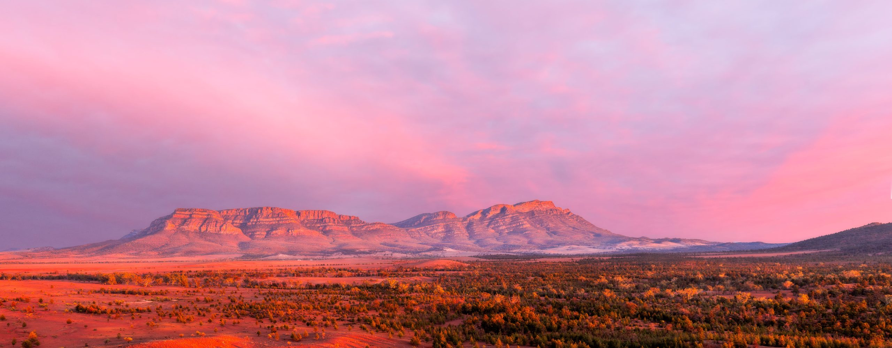

Feature projectImage to confirm Flinders Ranges, South Australia. Swap for a Southern Flinders project photo.Epic trails · South Australia · Since 2020Explore the feature project →
Remarkable Southern Flinders
Tourism and conservation in one project. Alongside the new park, the project is building a nature-based and Aboriginal cultural tourism destination less than three hours from Adelaide.
$10m
committed by the South Australian and Australian Governments
30,000 ha
being connected into one park
150+ km
of singletrack in the Melrose network
- 01An Epic mountain bike trail through Mount Remarkable National Park, designed for international Epic trail accreditation, a $1.8m investment
- 02The Gorges Walk, a three-day hike through Telowie and Nelshaby gorges in Wapma Thura
- 0320 km of new mountain bike trail open at Mount Remarkable, and a Melrose network of more than 150 km of singletrack
- 04Day visitor facilities at Wirrabara and an upgraded Mambray Creek campground
- 05Designed with input from the Nukunu Wapma Thura Aboriginal Corporation